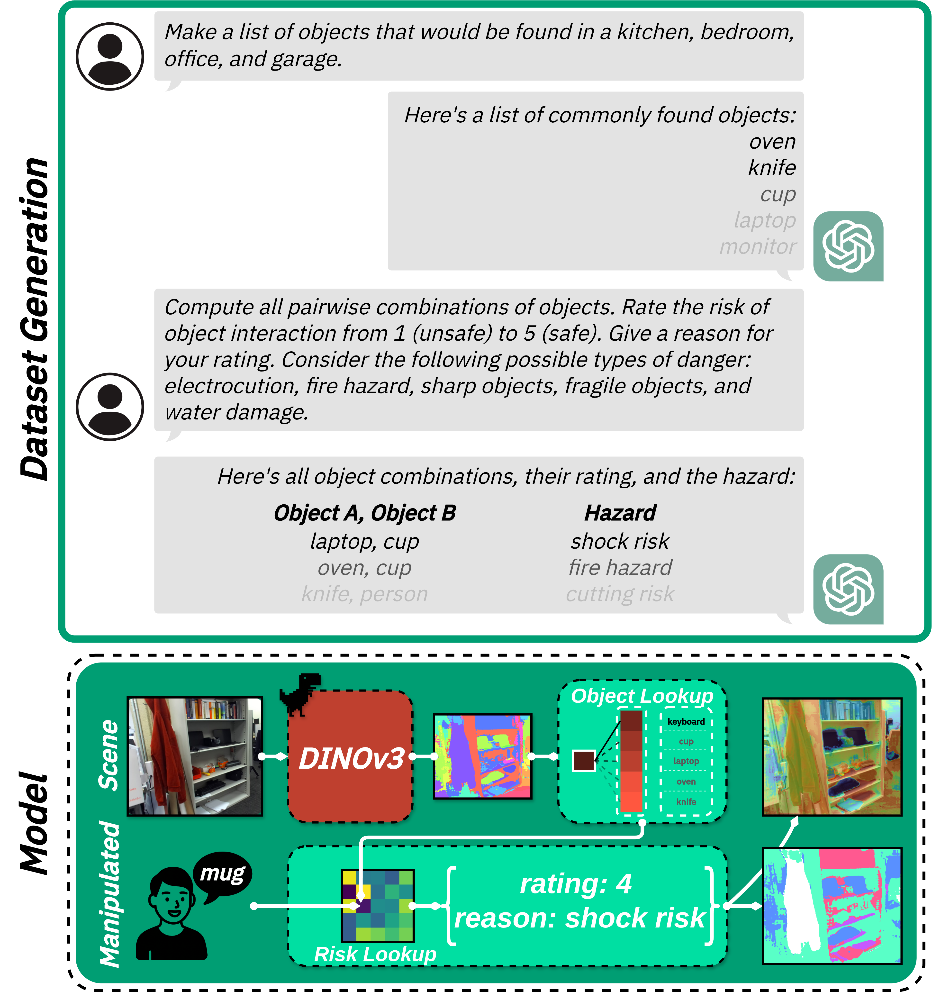

We learn a distance-conditioned likelihood from safe human demonstrations. RGB-D tabletop videos are segmented and tracked (YOLOv8 + SAM2 + HoistFormer), inter-object distances are aggregated into per-trajectory histograms, and discrete CDFs supervise a transformer that maps DINOv3 features of the manipulated and reference objects to Bézier control points of the CDF. The model is permutation-invariant across object pair samples and yields pixel-aligned, distance-aware risk tendencies from actions that humans naturally avoid or approach.
Method Overview
Likelihood


Prior


We build a semantics-driven prior using an LLM-assisted object-pair risk table. An LLM enumerates household objects by room and rates every pair’s proximity risk (1–5) with rationales (e.g., electrocution, fire, sharpness, fragility, water damage). Images per object are embedded with DINOv3 to form an object lookup; pixel features vote for the nearest object IDs, which query a pairwise risk LUT to yield object-aware priors. The prior is interpretable, scalable via LLM data generation, and adapts to task-specific rulesets.